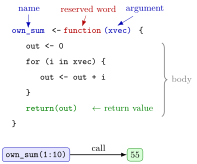

Writing Functions¶
Definition¶
A user-defined function is created with the reserved word function and stored under a name with assignment:
name_of_function <- function(arg1, arg2) {
# code that uses arg1 and arg2 to compute a result
return(result)
}
The names in parentheses are the function's arguments (its inputs), separated by commas, and the code in braces is its body. A call name_of_function(value1, value2) runs the body with arg1 set to value1 and arg2 set to value2, and gives back a return value: the argument of return(), or otherwise the value of the last expression evaluated.
Interpretation¶
A function packages a sequence of commands under a name, so that the same job can be done again with different inputs by one short call. Scripts become shorter, and a fix in the function fixes every place that uses it.

The figure labels the parts of own_sum() from Example 1. The name on the left of <- is how you call it, the argument xvec is a placeholder that receives whatever vector you pass, and the body computes the sum with a for loop. The call own_sum(1:10) plugs 1:10 into xvec and hands back 55.
A function is an object like any other. Before you can call it, the definition has to be run, after which it appears in the Global Environment pane of RStudio. Typing the name without parentheses prints the definition, formals() lists the arguments and body() shows the code. A good workflow is to first make each step work on concrete example data, and only then wrap the working code in function(...) { ... }. Keep each function focused on one task.
This is the function of Math I put into code: a rule that turns inputs into an output. Calling your own functions inside other functions, as own_colsum() does with own_sum() in Example 3, is like a composition of functions: small pieces that can be tested one by one and then combined.
A common mistake is editing the definition in the script but forgetting to run it again, so R keeps using the old version. Another is giving your function the name of a built-in such as sum, which hides the built-in until your object is removed.
Key Results¶
f <- function(args) { body }creates a function object and assigns it to the namef; nothing in the body runs untilfis called.- A call matches the supplied values to the arguments, by position or by name, as for built-in functions.
- Calling a function whose definition has not been run gives the error
could not find function. - Typing the name without parentheses prints the function;
formals(f)returns its arguments andbody(f)its code. - Your own functions can be called inside other functions, which lets you split a long task into small, separately tested pieces.
Examples¶
1. A first function. A sum computed with a loop, checked against the built-in:
own_sum <- function(xvec) {
out <- 0
for (i in xvec) {
out <- out + i
}
return(out)
}
own_sum(1:10)
#> [1] 55
sum(1:10)
#> [1] 55
2. Inspecting a function. The argument list and the body are parts of the function object:
formals(own_sum)
#> $xvec
#>
#>
body(own_sum)
#> {
#> out <- 0
#> for (i in xvec) {
#> out <- out + i
#> }
#> return(out)
#> }
The empty line after $xvec means that the argument has no default value.
3. Calling your own function inside another. Column sums of a matrix, reusing own_sum() on each column:
own_colsum <- function(xmat) {
out <- numeric(ncol(xmat))
for (i in 1:ncol(xmat)) {
out[i] <- own_sum(xmat[, i])
}
out
}
X <- matrix(1:12, 6, 2)
data.frame(own = own_colsum(X), built_in = colSums(X))
#> own built_in
#> 1 21 21
#> 2 57 57
The matrix X has columns 1:6 and 7:12, with sums 21 and 57.
4. Pitfall: calling before defining. A function exists only after its definition has been run:
own_mean(c(2, 4, 9))
#> Error in own_mean(c(2, 4, 9)) : could not find function "own_mean"
own_mean <- function(x) {
sum(x) / length(x)
}
own_mean(c(2, 4, 9))
#> [1] 5
Prerequisites¶
Related Concepts¶
- Default Arguments in Your Own Functions
- Return Values
- Function Environment
- Recursive Function
- Matrices in R
- Function
- Composition of Functions
Sources¶
- Programming for EOR · Week 3
- Lecture 3, Part 2 Functions and Recursion, sections "Why write your own functions?", "Anatomy of a function in R" and "Nested function calls"; Solutions Week 3, Part 2 Exercise 4
Aliases: function(), user-defined function, own function, define a function, function definition, formals, body Keywords: name <- function(args), function body, calling your own function, nested function calls
Last updated: 10 November 2026 16:43
Writing FunctionsDefault Arguments in Your Own FunctionsFunction EnvironmentOptimization with optim()One-Dimensional Optimization with optimize()Recursive FunctionReturn ValuesFunction CallFunction Arguments and DefaultsObject and Assignmentfor LoopMatrices in RFunctionComposition of Functions